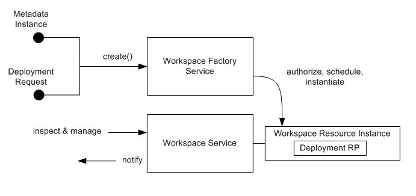
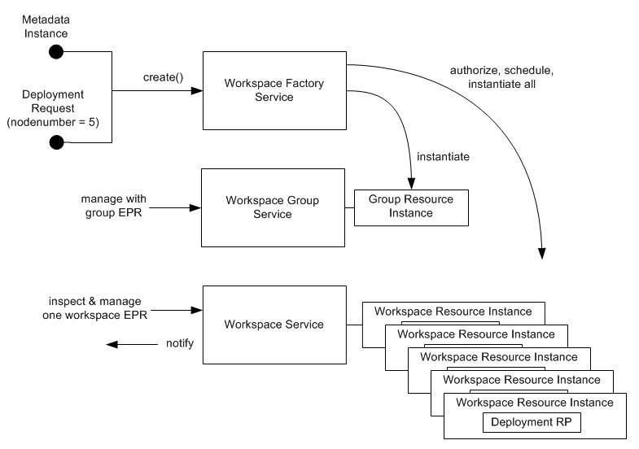

The web services interfaces can be broken into these categories:
| Workspace Metadata | Describes deployment-independent information about a workspace. |
| Deployment Request | Describes the resource allocation requested for a specific deployment of the workspace. |
| Factory Service | Allows an authorized client to deploy a workspace assigned to a specific resource allocation. This may be a group request for multiple workspaces. Optional parameters may be sent with the creation request. |
| Workspace Service | Allows an authorized client to manage a workspace. |
| Group Service | Allows an authorized client to manage a group of workspaces at once. |
| Ensemble Service | Allows an authorized client to co-schedule complex, heteregenous workspaces and workspace groups. More specific interface documentation is forthcoming. |
| Status Service | Allows a client to query the usage data the service has collected about it. |
The figure below illustrates the basic relationship between the factory and service interfaces.
The Workspace Factory Service has one operation called create. Create has two required parameters: workspace metadata and a deployment request for that metadata. Also, create will accept optional parameters.
Once created, a workspace is represented as a WSRF resource and can be inspected and managed through operations of the Workspace Service.

An important resource property of the workspace instance is the deployment resource property (RP). It provides deployment information about a workspace such as running time, the state of the workspace, and resource allocation.
You can examine the WSDL and XSD files directly online at the WSDL and XSD files page.
The figure below illustrates the relationship between the factory, service, and now group service interfaces. Here, the deployment request contains a request for more than one 'copy' of the metadata to be deployed.
For example, consider the request is for five workspaces.

Five network addresses are available (AllocateAndConfigure networking assignment is in use, see the logistics overview for more information) and the scheduling process succeeds for the group request, so the request goes through. If there was an error at any time during the create process, all allocations, reservations, etc. will be backed out.
A group resource instance (with its own unique EPR) is created. Five individual workspace resource instances (each with their own EPR) are also created. These six EPRs are returned by the factory to the client that invoked create.
From this point on, each workspace has its own state, its own network address, etc. These properties can be inspected (or subscribed to in order to receive notifications when they change) on a one by one basis.
The group EPR is used when you want to invoke the same management operation on all the workspaces at the same time. For example, it would not be efficient to destroy 100 workspaces one by one when you could make one remote call to accomplish the same thing.
The invoked group operation is attempted on each remaining workspace in the group. Consider an example situation where a client destroyed one workspace in a group on an individual basis and then later called destroy via the group service with a group EPR. That group operation would succeed, but it would only destroy the remaining workspaces.
If there is an error with an operation on one of the group members, this is noted in a return fault along with all of the successes. There are no error backout semantics (only during factory group-create, which is an all or nothing process). A group operation is simply a shortcut for a regular workspace service operation invoked simultaneously on N workspace EPRs.
You can examine the WSDL and XSD files directly online at the WSDL and XSD files page
_NIMBUS_CENTER2_COLUMN_END _NIMBUS_FOOTER1 _NIMBUS_FOOTER2 _NIMBUS_FOOTER3